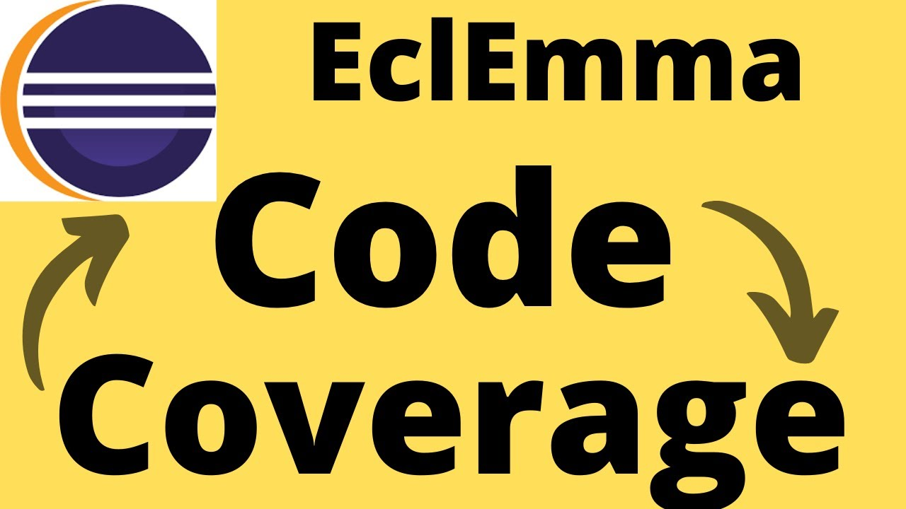

White-box testing
Examples
Consider the following piece of code:
Printme (int a, int b) { int result = a + b; If (result> 0) Print ("Positive", result) Else Print ("Negative", result) }
The goal of WhiteBox testing in software engineering is to verify all the decision branches, loops, and statements in the code.
To exercise the statements in the below white box testing example, WhiteBox test cases would be
- A=1, B=1
- A=-1, B=-3
White Box Testing Tools
Below is a list of top white box testing tools:
| EclEmma | NUnit | PyUnit | HTMLUnit |
|---|---|---|---|
|  |  |
 |